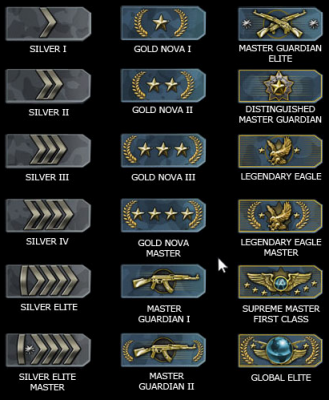

Les ranks sur CS:GO
Sur Counter-Strike , il y a un système de rank. Il y en a plusieurs , tous présent en anglais sur la photo ci-dessous.Le premier grade est argent 1 et le dernier , global elite.
La partie rank se constitue en plusieurs étapes que nous allons voir ci-dessous.
I. Comment obtenir un rank ?
Pour obtenir un rank, il faut joué au mode compétitif qui oppose 5 joueurs contre 5 joueurs en mode defuse. Vous devez faire 10 parties pour avoir un rank. Votre premier rank peut être silver 1 comme il peut être nova 1 , ça dépend des parties que vous avez. Si vous avez gagnez vos 10 parties vous aurez un meilleur rank, logique. Vous tomberez sur des adversaires non-classés , comme vous , ou alors des joueurs de rank supérieur. Généralement ça ne dépasse pas le silver. Si vous jouez avec un ami qui a un meilleur rank que vous , les équipes seront équilibrées.
II. Peut on perdre son rank ?
Oui, on peut perdre son rank sur CS:GO. Mais on peut aussi ne redescendre que d'un rank. Si vous êtes inactif sur le jeu pendant un certains temps (± 1 mois) vous allez perdre votre rank et vous allez devoir refaire une victoire pour en regagner un nouveau. Mais par exemple si vous êtes silver 2 , que vous avez enchainé 5 défaites vous pouvez redescendre silver 1.
III. Que se passe -t- il en cas d'égalité ?
Et bien en cas d'égalité on peut soit gagner un rank ou alors en perdre un. Cela dépend si la partie que vous avez fait était mauvaise ou non.